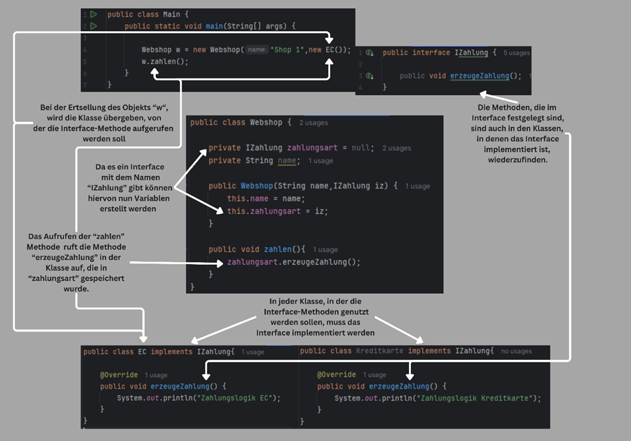

Übersicht
Das Modul "Objektorientierte Programmierung" vermittelt die Grundlagen der OOP mit Java. Schwerpunkte sind Klassen, Objekte, Vererbung, Polymorphie und der Einsatz von UML-Diagrammen zur Software-Modellierung.
Inhalte
- Grundlagen: Klassen und Objekte, Attribute und Methoden.
- Fortgeschrittene Themen: Vererbung, Polymorphie, Schnittstellen und abstrakte Klassen.
- UML-Diagramme: Klassendiagramme, Sequenzdiagramme und Objektdiagramme.
- Praxis: Debugging mit Eclipse/IntelliJ, Implementierung einer grafischen Anwendung.
Ablauf
- Theoretische Grundlagen:
- Einführung in die OOP mit Beispielen.
- Modellierung von Softwarestrukturen mit UML.
- Praktische Übungen:
- Erstellen und Debuggen von Java-Anwendungen.
- Modellieren und Implementieren von Klassenbeziehungen.
- Entwicklung einer grafischen Anwendung zur Raumplanung.
- Analyse und Optimierung bestehender Codebeispiele.
Ziele des Moduls
Studierende sollen die Grundlagen der OOP verstehen und anwenden können. Ziel ist die Entwicklung und Analyse von objektorientierter Software unter Einsatz von UML-Diagrammen und gängigen Entwicklungswerkzeugen.
Beispiel
Vorteile von Interfaces in der objektorientierten Programmierung anhand eines Beispiels

-
In dem Beispiel sind folgende Vorteile zu finden:
- Lesbarkeit und Organisation
- Zusammenarbeit (einer implementiert Ec ein anderer Kreditkarte)
- Erweiterung (eine zusätzliche Zahlmethode ist leicht zu ergänzen)
- Unabhängigkeit (EC kann unabhängig von Kreditkarte bearbeitet werden)
- Funktion (das Interface sagt eindeutig aus, was passieren soll die Umsetzung kommt von den Klassen)